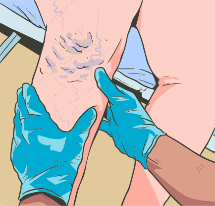

Vários são os fatores envolvidos nesse processo, entre os quais se destacam a obesidade, profissões que exigem longa permanência na posição de pé, histórico de trombose venosa profunda, uso de anticoncepcionais, esportes que exigem impulsão e a gravidez. Os principais sintomas relacionados a essa condição são:
Clique na prancheta e veja os tipos de tratamentos.

